Project 3A
Image Mosaics via Projective Transformations
In this project, we will experiment with homographies to show the relationship between images shot from the same optical center. Using manually created image correspondences, I will project images into the same perspective and stitch images together into a *hopefully* seamless mosaic.
Part A.1: Shoot the Pictures
Image Set 1: Stadium
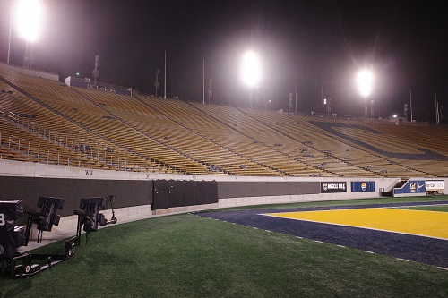
Image 1
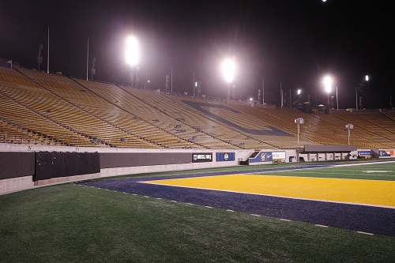
Image 2
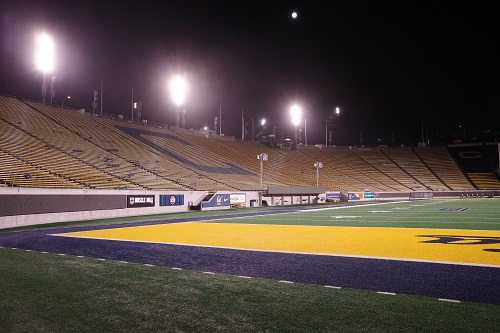
Image 3
Image Set 2: Tokyo
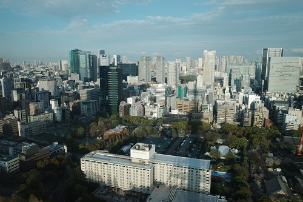
Image 1
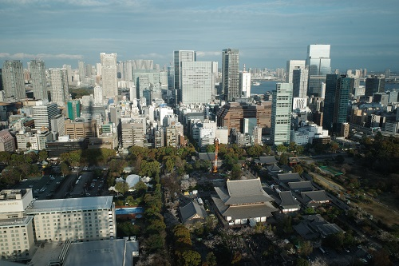
Image 2
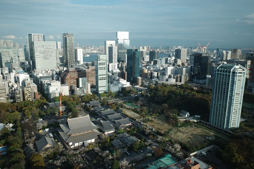
Image 3
Image Set 3: Seoul
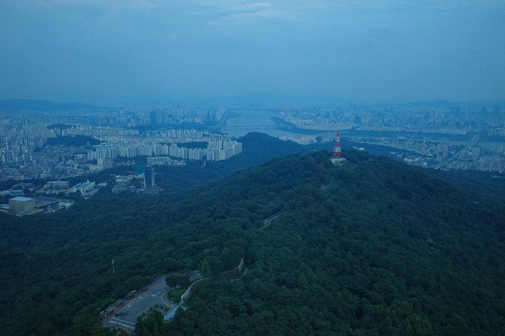
Image 1
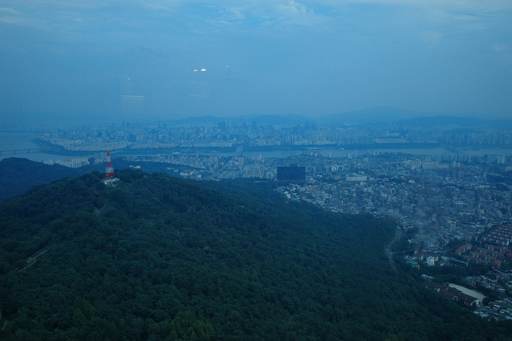
Image 2
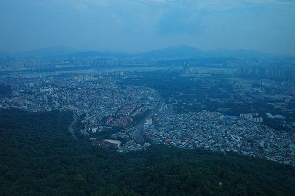
Image 3
Here are the three sets of images I used for this project. The stadium images were taken here at Berkeley's Memorial Stadium. I made an effort to only rotate the camera I shot the photos with.
It is important to note that moving the camera or optical center will change the perspective projected onto the 2d image plane. Since the real world is 3D, this could cause issues with our projections. The more you move the optical center, the larger the discrepancies in the actual scene being projected onto the image plane. If the scene is different, homographies can no longer recover perspective changes.
The image sets from Tokyo and Seoul were slightly different. These were taken in Seoul's Namsan Tower and the Tokyo Tower. The optical center for these images is certainly not the same, but since the image is taken from such a distance of most of the image, the translation of the optical center is almost negligible.
Part A.2: Recover Homographies
Point Correspondences
Prompt: Show visualizations of your corresponding points between image pairs. Display the points marked on each image used to compute the homography.
Seoul Image Correspondences
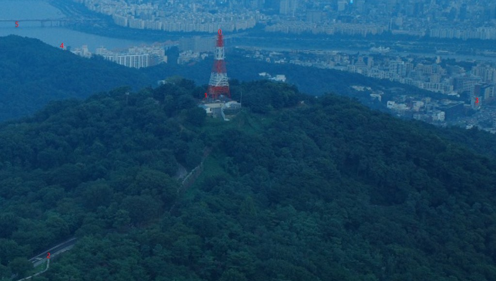
Seoul: 6 Correspondence Points (Image 2)
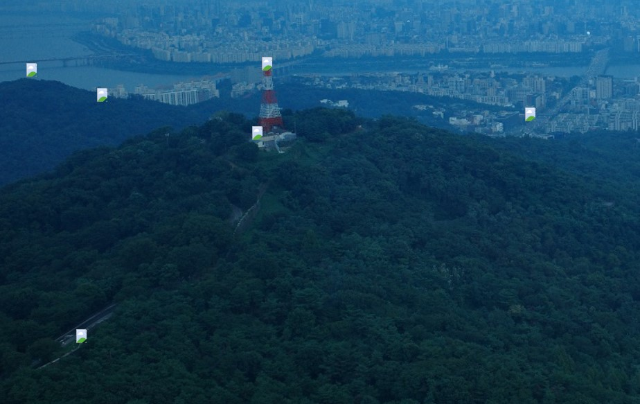
Seoul: 6 Correspondence Points (Image 3)
System of Equations and Recovered Homography
For each homography, we have 8 unknowns. We can set up a system of equations to solve for the homography. For each correspondence \((x, y) \rightarrow (u, v)\), we can generate two equations. This enforces a minimum of 4 correspondences to solve for our homography. Of course, the more correspondences the better to decrease the error in our homography. For this we will use standard least squares to solve for our homography.
For each correspondence \((x, y) \rightarrow (u, v)\):
Matrix form \(A\mathbf{h} = \mathbf{b}\):
Part A.3: Warp the Images
Interpolation Comparison: Seoul Radio Tower
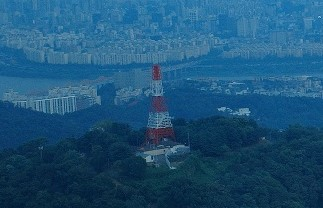
Original Image
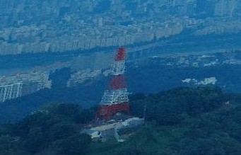
Nearest Neighbor Interpolation
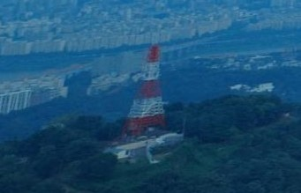
Bilinear Interpolation
This displays the difference between nearest neighbor and bilinear interpolation well in my opinion. The original image is not warped, so it looks slightly different. The projections apply very different effects on the image. Bilinear interpolation appears to smooth the image which makes sense as the colors should be perfectly averaged based on distance from where they originally were. Meanwhile nearest neighbor gives a grainy look and the aliasing effects are visible. Nearest neighbor is much faster while bilinear interpolation seems to give a more "accurate" looking image, even though it is smoother.
Rectification Results
To further test the homography and interpolation methods, I applied them to floor paterns for rectification. By manually setting the corners to map to a perfect square, we can 'look' straight down at the floor paterns.
Cathedral Rectification
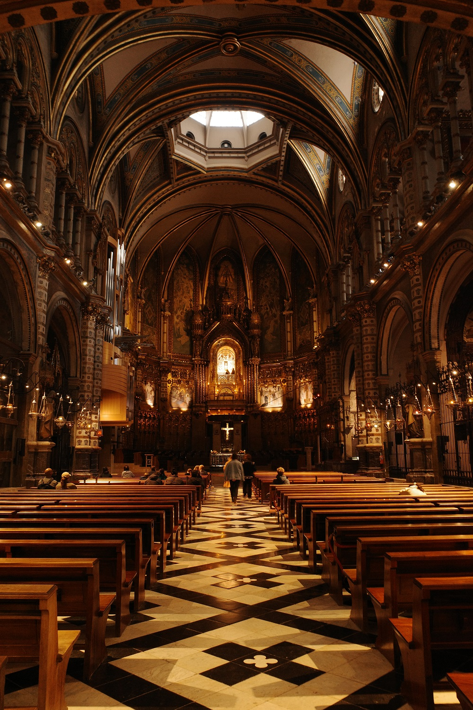
Original
Rectified (Nearest Neighbor)
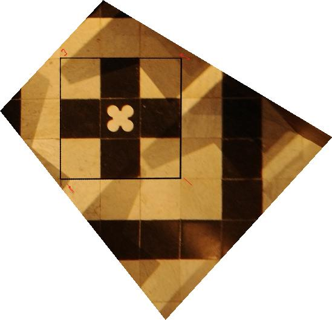
Rectified (Bilinear)
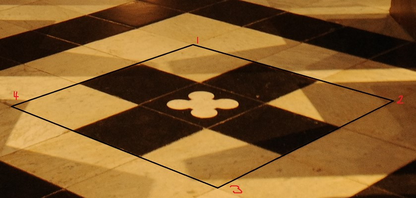
Cathedral: Floor Pattern Original
Platform Rectification
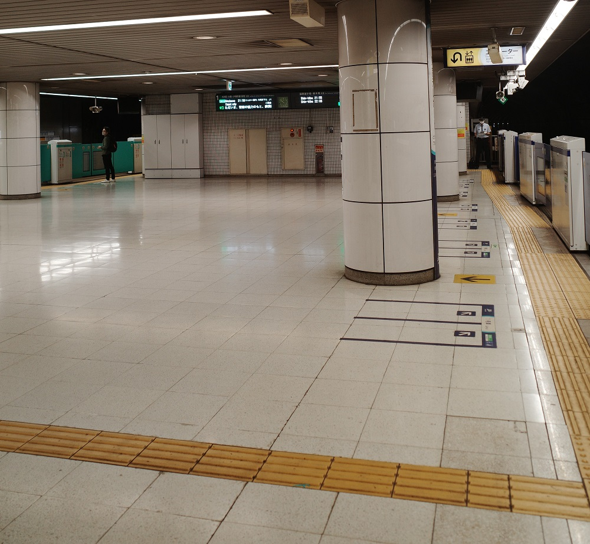
Original (Perspective View)
Rectified (Nearest Neighbor)
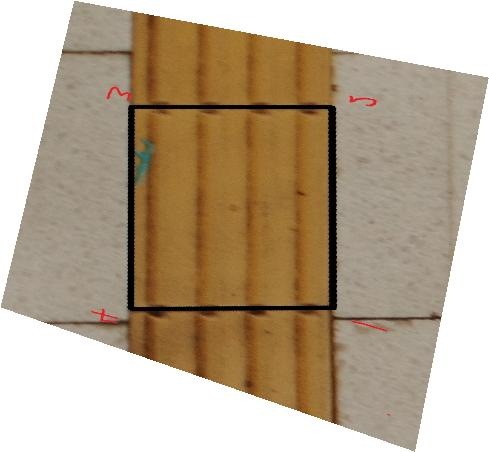
Rectified (Bilinear)
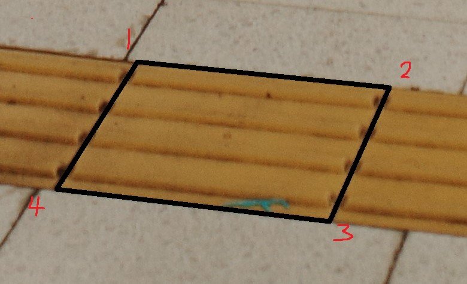
Platform: Floor Pattern Original
Part A.4: Blend the Images into a Mosaic
Finally, we will put everything together to create a mosaic. For these, I am manually setting correspondence points for each image. Refer to part A.2 for a more detailed look at this.
I had a lot of trouble constructing mosaics with the manual point correspondence tool provided to me. The points would be incorrectly offset. This will be fixed in part B. For now, the mosaics are only two images stitched together.
Stadium Mosaic
Image 1
Image 2
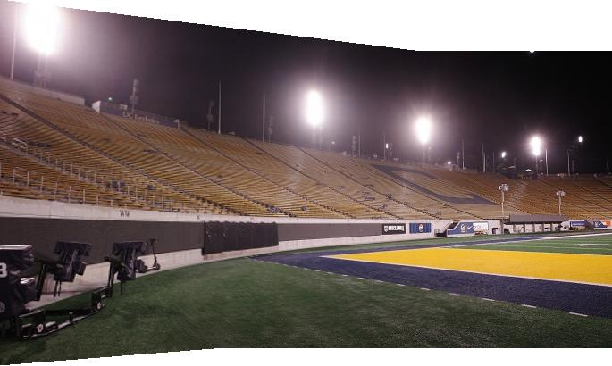
Stitched Image
Stadium Mosaic
Image 2
Image 3
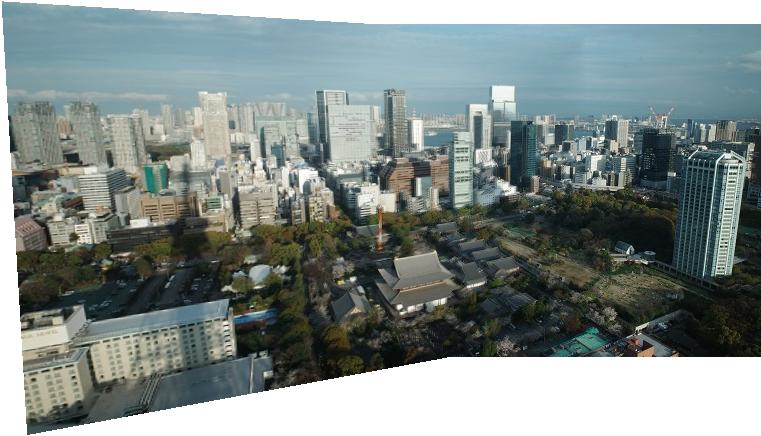
Stitched Image
Seoul Mosaic
Image 2
Image 3

Stitched Image
Results Discussion
Manual correspondences are quite accurate, but very tedious. Some of the correspondences aren't the best because getting pixel perfect correspondences takes a long time. The Tokyo mosaic has evidently the worst correspondences as there is a clear blur from correspodence error.
Continue to Part B
In Part B, I automate the mosaic creation process using Harris corner detection, ANMS, and RANSAC.
Go to Part B: Autostitching →